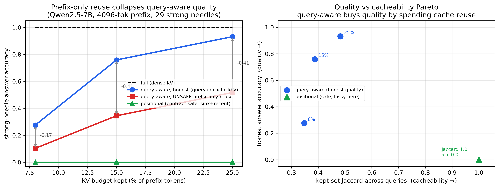
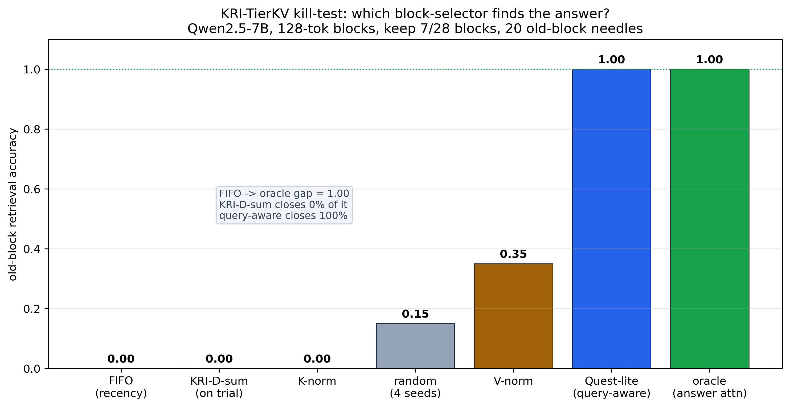
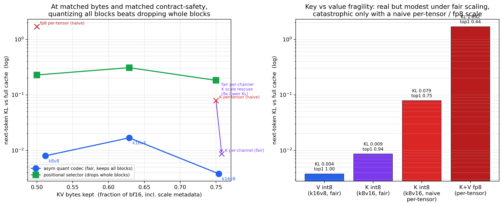

Before a KV-cache compression, pruning, routing, quantization, or offload algorithm goes near a production prefix-sharing or offload path, it should answer one question that a benchmark does not. After the algorithm touches a shared prefix, is that prefix still the same cache object — reloadable, reusable, position-compatible, and close enough to the original that the model does not change its mind?
PIA answers it in stages, cheapest first: a CPU contract check with no model, then a GPU drift check on whatever survives, and the real serving stack only for the finalists. It reuses the deterministic Cartridge prefix artifacts from our routing-attention R&D as stand-ins for a shared prefix cache — which is what lets the whole screen run on one GPU for the price of a coffee. It flags the risks of an adaptive KV method early, and on the same axes points at the integrity-preserving choice for an existing offload path.
A compression paper usually reports one curve: compression ratio against model accuracy. That curve hides the failure that breaks a serving stack. An algorithm can leave accuracy untouched on the prompt it was measured on, and still rewrite the shared prefix into something a prefix-cache or offload store can no longer reuse. The damage is invisible on the accuracy plot because accuracy was never the property at risk — the property at risk is the cache contract.
Prefix caching means two requests with the same prefix reuse the same KV blocks. KV offloading means those blocks get written once and read back later, possibly on another machine. Both rest on a quiet assumption: the prefix maps to a stable, reloadable object that does not depend on which request happens to arrive next. An algorithm that quietly makes the stored prefix depend on the query, or change shape, or drop the system-prompt block, breaks that assumption while the accuracy number looks fine.
The harness asks the narrower question on purpose: not “does the algorithm compress?” but “after compression, is the prefix still the same reusable cache object?” If it cannot answer yes, it has no business being tested inside LMCache or a distributed store yet.
An algorithm can fail in two unrelated ways, and the harness keeps them apart so a single number never hides one behind the other.
Geometry, determinism, and the cache key. Does every retained block reload at its original position and shape? Does the same prefix produce the same stored bytes every time? If the stored object depends on the query, is the query in the cache key? This axis runs on a CPU with no model — it is pure bookkeeping over block manifests.
The orthogonal question. Loading a real model over the cartridge, how far does the candidate move the next-token distribution from the full-cartridge baseline? Measured as KL divergence and top-1 / top-k agreement. This needs a GPU, and it catches the algorithm that keeps perfect geometry while wrecking the answer.
A clean contract with bad drift, or clean drift with a broken contract, are both real failures — and they are different failures with different fixes. The verdict reports both: a PASS / WARN / FAIL status, a danger score, and one of five plain-language classifications.
The two axes are run as stages, not all at once, so a method that fails the cheap check never burns a GPU. Each stage is a gate: only what survives moves on. The whole point is that the early stages are almost free, because they run over a Cartridge — a deterministic, prefix-only KV artifact from our routing work that behaves exactly like a shared prefix cache — instead of a live serving stack.
A Cartridge is a saved prefix KV cache with a manifest: the same deterministic, reloadable, prefix-keyed object a real prefix cache stores. Reusing it as the test fixture is what makes every later stage cheap and repeatable — the method under test is applied to the Cartridge, and we watch what it does to the contract and the output. This is the routing-attention R&D the harness is built on, turned into a preflight fixture.
Pure bookkeeping over the block manifest: does every retained block reload at its original position and shape, does the same prefix produce the same bytes, and if the artifact depends on the query, is the query in the cache key? A method that is query-dependent under a prefix-only key is flagged DANGEROUS_FOR_PREFIX_SHARING here, before any GPU is touched. Most bad ideas die at this gate.
For whatever keeps a clean contract, load a real model over the Cartridge and measure how far the method moves the next-token distribution from the full-cache baseline — KL divergence and top-1 agreement, with the query's position pinned so the drift is the algorithm's, not a bookkeeping artifact. This catches the method that keeps perfect geometry while wrecking the answer, and it is where the byte-vs-drift trade-offs on this page are measured.
PIA is a preflight, not the last word. A method that clears both gates has earned a run on the real stack — vLLM / FlashInfer / LMCache with the actual quantization kernels and long context — where the fake-quant, short-context, synthetic-cartridge caveats of the screen are retired. The screen decides what is worth that run; the stack delivers the verdict.
Read the stages as a funnel: stage 1 kills query-dependent prefix-sharing risks for free, stage 2 ranks the survivors by drift per byte, and stage 3 confirms the recommendation on the real stack. The results below are stage-1 and stage-2 outputs — fast screens that flag the risk and point at the integrity-preserving fix.
| Classification | What it means |
|---|---|
| SAFE_FOR_PREFIX_OFFLOAD | Shape-preserving, deterministic, and keyed by the prefix hash alone. Store it and share it on an ordinary prefix-cache or offload path. |
| SAFE_ONLY_WITH_EXTENDED_CACHE_KEY | Reloadable and shape-preserving, but the stored object depends on the query. It must carry the query hash in its cache key, or be treated as routing rather than prefix cache. |
| SAFE_ONLY_WITH_CUSTOM_CONNECTOR | Uses partial blocks, merging, sub-block masks, or variable-shape tensors. Not reusable by plain block-hash prefix caching without a custom connector and extra metadata. |
| ROUTING_ONLY_NOT_PREFIX_CACHE_SAFE | Fine as a query-aware sparse-attention prior, but not compatible with prefix sharing: two requests with the same prefix no longer agree on the prefix object. |
| DANGEROUS_FOR_PREFIX_SHARING | The same prefix can map to different or non-reloadable KV objects. Do not put it on a prefix-sharing or offload path as-is. |
The harness uses a Cartridge as a deterministic stand-in for a prefix-cached or offloaded KV object. A cartridge is a fixed, precomputed KV cache with stable block boundaries, so it is a cheap, reproducible prefix you can run an algorithm against without rerunning prefill. It does not require LMCache or distributed serving — the cartridge is the offload emulator.
Every algorithm enters through one narrow slot — an adapter — so the harness never needs to know whether the thing is KRI, a quantizer, an eviction policy, or a clustering scheme. It only sees the manifest and the transformed tensors. The adapter also declares what the algorithm claims about itself: its policy (prefix cache, routing, or offload codec) and which fields it puts in its cache key. The verdict is the collision between what the algorithm claims and what it actually does.
To expose that collision, the harness replays the algorithm across many suffix or query requests that all share the same prefix hash, repeating each request to separate non-determinism from query-dependence. A selection that changes when you re-run the same query is broken. A selection that changes across different queries is query-aware — fine for routing, dangerous for a prefix cache keyed by prefix alone.
A100 80GB · Qwen2.5-7B-Instruct · citation-check cartridge (4096 tokens, 256 blocks) · 16 queries · 2026-06-30
Six configurations went through the drift module and the contract verdict: two identity checks, two block selectors at a tight sixteen-block budget, and two KV codecs. The identity checks came back exactly zero — keeping every block, or applying the no-op codec, gave a KL of zero and full top-1 agreement on every query. That confirms the attention masking and the pinned query positions are exact, so any drift elsewhere belongs to the algorithm and not to the harness.
| Config | Mode | KL mean | KL max | Top-1 agree | Status | Classification | Danger |
|---|---|---|---|---|---|---|---|
| full | selector | 0.000 | 0.000 | 1.000 | PASS | SAFE_FOR_PREFIX_OFFLOAD | 0.00 |
| codec_none | codec | 0.000 | 0.000 | 1.000 | PASS | sanity | — |
| codec_int8 | codec | 0.422 | 2.80 | 0.688 | FAIL | SAFE_FOR_PREFIX_OFFLOAD | 0.53 |
| codec_fp8 | codec | 4.952 | 9.75 | 0.062 | FAIL | SAFE_FOR_PREFIX_OFFLOAD | 0.89 |
| anchor_recency | selector | 1.901 | 5.07 | 0.375 | FAIL | SAFE_FOR_PREFIX_OFFLOAD | 1.00 |
| query_aware | selector | 1.618 | 5.23 | 0.312 | FAIL | DANGEROUS_FOR_PREFIX_SHARING | 1.00 |
Selectors ran at a sixteen-of-256-block budget; the codecs here are
per-tensor round-trips, a deliberately naive lower bound. The
asymmetric extension — K16/V8 and friends, with
fair per-channel key and per-token value scaling, and bytes accounted
— is its own run in
Quantization on the same
axes below. Full data, reports, and the run log are archived in
knlp-key-results/prefix-integrity-20260630/.
The reference adapters prove the harness works. The real question is what it says about methods people actually deploy. We took ten off the KVPress leaderboard and their papers — StreamingLLM, Knorm, SnapKV, Expected Attention, TOVA, H2O, PyramidKV, plus Quest, Ada-KV, and KIVI — and ran each through the same slot. Each method is classified by its design: whether it keeps whole blocks or scattered tokens, whether the kept set depends on the query, whether heads disagree, and whether it changes the tensor layout. Those are facts about the method, not about any one prompt, so the contract axis settles them on a CPU.
| Method | Source | Granularity | Query-dependent | Partial | Verdict |
|---|---|---|---|---|---|
| StreamingLLM | KVPress | block (sink + window) | no | 0% | SAFE_FOR_PREFIX_OFFLOAD |
| KIVI | paper | codec (2-bit + residual) | no | 0% (dtype) | SAFE_ONLY_WITH_CUSTOM_CONNECTOR |
| Knorm | KVPress | token, per-head | no | 52% | SAFE_ONLY_WITH_CUSTOM_CONNECTOR |
| Quest | paper | block (pages) | yes | 0% | ROUTING_ONLY_NOT_PREFIX_CACHE_SAFE |
| SnapKV | KVPress | token, per-head | yes | 56% | DANGEROUS_FOR_PREFIX_SHARING |
| Expected Attention | KVPress | token, per-head | yes | 56% | DANGEROUS_FOR_PREFIX_SHARING |
| TOVA | KVPress | token, per-head, decode | yes | 56% | DANGEROUS_FOR_PREFIX_SHARING |
| H2O | KVPress | token, per-head, decode | yes | 56% | DANGEROUS_FOR_PREFIX_SHARING |
| PyramidKV | KVPress | token, per-head, per-layer | yes | 56% | DANGEROUS_FOR_PREFIX_SHARING |
| Ada-KV | paper | token, per-head | yes | 56% | DANGEROUS_FOR_PREFIX_SHARING |
One method — StreamingLLM, the only purely positional one — is a clean prefix-cache citizen. Everything adaptive picked a different block set for all sixteen queries, so under a prefix-only key it lands DANGEROUS_FOR_PREFIX_SHARING. That is not a knock on the methods; it says they are routers, not prefix-cache-safe compressors. Put the query hash in the cache key and the same six move to SAFE_ONLY_WITH_EXTENDED_CACHE_KEY. KIVI and Knorm are query-independent but change the layout — a dtype change, or per-head scattered tokens that leave half the blocks partial — so they need a custom connector, not plain block-hash reuse. Quest keeps the whole prefix and only routes reads, so it is honestly a router and labeled as one.
Scope. This is the contract axis, which follows from each method's published design and needs no model. The drift axis — how much each method actually moves the output — needs each method's real selection over a real model, and the honest way to get it is to drive the harness from the KVPress presses on a GPU. That is the natural next run.
A100 80GB · Qwen2.5-7B-Instruct · KVPress presses · 5662-token context, keep ~25%
The contract axis above is design-derived. To fill the other axis with real numbers we installed KVPress and ran its actual presses on an A100: for each method, compress the KV of a long context, then measure how far the model's next-token distribution moves from the uncompressed baseline. This is the same drift the reference run measured with fp8/int8, now from the real methods.
| Method | Contract verdict (design) | Measured drift KL | Top-1 agree |
|---|---|---|---|
| SnapKV | DANGEROUS_FOR_PREFIX_SHARING | 0.425 | 0.75 |
| TOVA | DANGEROUS_FOR_PREFIX_SHARING | 0.716 | 0.75 |
| Expected Attention | DANGEROUS_FOR_PREFIX_SHARING | 0.860 | 0.50 |
| H2O | DANGEROUS_FOR_PREFIX_SHARING | 1.973 | 0.75 |
| StreamingLLM | SAFE_FOR_PREFIX_OFFLOAD | 2.510 | 0.75 |
| Knorm | SAFE_ONLY_WITH_CUSTOM_CONNECTOR | 3.486 | 0.75 |
Hypothesis, not yet a proof. In this run the drift ordering is the reverse of the contract ordering — SnapKV has the lowest drift yet the most dangerous contract verdict, while the prefix-safe StreamingLLM has among the worst drift because at this budget it drops the middle where the answer lived. That points to a tension between quality safety and prefix-sharing safety. But this run does not establish it: the question is appended after compression, so the adaptive methods compressed query-independently and never exercised the query-dependence that drives their dangerous contract verdict, and the dense baseline found the needle only half the time, so a low KL can mean “faithfully preserves the model's confusion.” The decisive form is the same-prefix, many-query cache-reuse replay in the next section, which runs the query-dependence directly and confirms the tension.
The reason to measure both axes is still the point: a quality leaderboard ranks SnapKV at the top and would send it to production, while the contract axis shows it is a router, not a prefix-cache-safe compressor, so under a prefix-only key it would corrupt a shared prefix. Whether the safe-looking positional method must buy that safety with accuracy is what the next experiment settles. The right choice depends on which axis binds — and you only see both if you measure both.
Compression here is query-independent (the question is appended after
compression), so this isolates each method's intrinsic quality loss;
the query-dependence that drives the contract verdict is a design
property, measured separately. Four-probe needle set, one budget;
KL is the robust signal. PyramidKV and Ada-KV hit KVPress API mismatches
on this build and are design-classified only. Data in
prefix-integrity-20260630/kvpress_drift/.
A100 80GB · Qwen2.5-7B-Instruct · 4096-token shared prefix · 6 prefixes, 29 strong needles
The drift table above compressed each prefix without a query, so it could not show the thing that actually makes an adaptive method unsafe to share: its compressed cache depends on which question you asked. This test runs that directly. One long prefix holds several planted facts; we build a method's compressed cache and then reuse it across different questions under a prefix-only key — exactly what a prefix cache does when two requests share the same opening context. We score only the facts the uncompressed model can actually answer, so a compressed method is judged on real retrieval, not on the model's own confusion.
A query-aware method (keep the tokens the question attends to, SnapKV-shaped) is measured two ways. Honest selects using the current question — the method deployed correctly, with the question inside the cache key. Unsafe reuse builds the cache from the first question and reuses that same prefix-only artifact for every later question. A positional method (a sink plus a recent window, StreamingLLM-shaped) never looks at the question, so its one cache serves every query identically.
| KV budget kept | full (dense) | query-aware, honest | query-aware, UNSAFE reuse | positional (safe) | kept-set overlap across queries |
|---|---|---|---|---|---|
| 8% | 1.00 | 0.28 | 0.10 | 0.00 | 0.35 |
| 15% | 1.00 | 0.76 | 0.34 | 0.00 | 0.39 |
| 25% | 1.00 | 0.93 | 0.52 | 0.00 | 0.48 |

Deployed correctly, the query-aware method climbs toward the dense baseline as the budget grows — 0.28, then 0.76, then 0.93. But reusing that same cache across questions stays at roughly half of that at every budget: it kept the first question's fact, not the current one's. The overlap between the token sets different questions want to keep is only about a third to a half, which is both why the harness flags it dangerous and why the reuse collapses.
The positional method is the mirror image. Every question keeps the same tokens, so its cache is perfectly reusable — but at these budgets a sink plus a recent window never reaches the old middle where the facts sit, so it answers nothing. One method is high quality only when the cache key carries its question; the other keeps full reuse but cannot serve the question at an aggressive budget. That trade — quality bought with cache reuse — is exactly what the contract axis predicted from the design alone, now confirmed by running it.
The context is 4096 tokens because the query-aware selector reads full
attention, which does not fit past ~4-5K on an 80GB card; the effect
is a property of the selection depending on the question, not of
context length, so it is expected to sharpen at longer context with a
cheaper selector. The positional row is a floor, not a tuned
StreamingLLM. Single model. Getting here took four fixes — a
validated masking path, distinct non-interfering facts, a normalized
scorer, and a sink-aware selector — all recorded in the findings.
Data and plot in
prefix-integrity-20260630/pia-reuse-replay/.
A100 80GB · Qwen2.5-7B-Instruct · 128-token blocks · keep 7 of 28 blocks
The reuse replay above is about a prefix cache. The same question comes up for a tiered cache that keeps a few old blocks in fast memory and spills the rest: which blocks do you keep? One proposed answer was a query-independent magnitude score (sum the keys and values in a block, keep the biggest). If that worked you could route without knowing the question. This run tests it directly. Facts are planted one per old block; each question needs a different block; a method keeps the protected first block, a small recent window, and three old blocks of its choosing. Success is keeping the block that holds the answer and then answering. We score only the facts that sit in a genuine old block, since a fact in the recent window is kept by everyone and tests nothing.
| block selector | kind | old-block retrieval |
|---|---|---|
| oracle (looks at the answer) | ceiling | 1.00 |
| query-aware (looks at the question) | deployable | 1.00 |
| value-magnitude | query-independent | 0.35 |
| random (4 seeds) | query-independent | 0.15 |
| KRI-D-sum (key+value magnitude) | query-independent | 0.00 |
| recency (FIFO) | query-independent | 0.00 |

The answer block is fully selectable — the oracle gets it every
time — and the query-aware score matches it. The magnitude score
gets none of it, below even random, because it must commit to the same
three old blocks for twenty different questions. Key magnitude is
actually anti-informative here; value magnitude carries a little
salience because the planted facts are conspicuous sentences, but it is
capped for the same reason. It is the reuse replay's lesson in a
different cache: a routing decision that ignores the question cannot
serve many questions from one shared context, and the win that survives
is query-aware. Details and the decision rule are in
prefix-integrity-20260630/kri-tierkv-killtest/.
A100 80GB · Qwen2.5-7B-Instruct · 4096-token cartridge · 48 queries
Selection is one way to shrink a KV cache; quantization is the other. A quantization codec is query-independent — it round-trips every block the same way regardless of the question — so on the contract axis it is safe to share, needing only a codec-aware connector for its non-standard dtype. That is the same query-independence that made a selector useless, turned into a virtue: a codec never has to guess which block the question wants, because it keeps them all, in fewer bits. This table puts codecs and block selectors on PIA's axes together, with bytes made explicit, and folds in the asymmetric K16/V8 quantization from the decode work — keep the fragile keys at 16 bits, compress the tolerant values.
Scale granularity decides this measurement, so fix it first. A single per-tensor scale on post-RoPE keys manufactures key fragility: the keys carry per-channel outliers, and a global scale clips them. Scale keys per-channel and values per-token — the standard granularity — and keep the crude per-tensor codecs only as a labeled stress control. Count bytes including the scale metadata.

| method | bytes vs bf16 | what it does | next-token KL | top-1 |
|---|---|---|---|---|
| K16/V8 (fair) | 0.75 | values int8 per-token | 0.0038 | 1.00 |
| K16/V4 (fair) | 0.63 | values int4 per-token | 0.0168 | 1.00 |
| K8/V8 (fair) | 0.51 | both quantized, fair scales | 0.0080 | 1.00 |
| K8/V16 (fair) | 0.76 | keys int8 per-channel | 0.0086 | 0.94 |
| K8/V16 (naive per-tensor) | 0.75 | keys int8 global scale | 0.0789 | 0.75 |
| K8/V8 fp8 (naive per-tensor) | 0.50 | symmetric fp8, global scale | 1.6921 | 0.44 |
| positional selector @0.75 | 0.75 | drops whole blocks | 0.1822 | 0.94 |
| positional selector @0.50 | 0.50 | drops whole blocks | 0.2273 | 1.00 |
At the same byte budget and the same contract safety, quantizing every block beats dropping whole blocks by one to two orders of magnitude on drift — K16/V8 at 0.75 bytes moves the distribution 48× less than a positional selector spending the same bytes, because evicting a quarter of the prefix throws away middle blocks a question needed, while quantization keeps them all approximately. That is a Pareto point selection cannot reach: it is why the deployed asymmetric serving stack quantizes the shared prefix rather than selecting over it.
The key-vs-value asymmetry survives, but honestly. Once keys are scaled
per-channel the naive “keys die at 8 bits” effect mostly
disappears (KL 0.079 → 0.009, a 9× rescue); what remains is a
real but modest edge — quantizing keys still drifts about twice as
much as quantizing values and is the only 8-bit arm to drop top-1 below
one. The catastrophe is reserved for fp8 with a coarse scale, which
reproduces the decode
key-fp8 collapse and is the loudest warning in the table. Data in
prefix-integrity-20260630/asym-codec-table/.
The query-aware selector keeps whole blocks at their original geometry, so a check that only looked at shape or accuracy would wave it through. But it picks a different set of blocks for every query while declaring a prefix-hash-only cache key. With sixteen queries it produced sixteen distinct manifests for one prefix. Two requests that share the prefix now disagree on what the prefix is, so it lands at DANGEROUS_FOR_PREFIX_SHARING. Declaring the query hash in its key moves the same algorithm to SAFE_ONLY_WITH_EXTENDED_CACHE_KEY — it was never a prefix-cache citizen, it was a router wearing the wrong label.
The fp8 codec is everything the contract axis wants: shape-preserving, deterministic, query-independent, every block intact — a clean SAFE_FOR_PREFIX_OFFLOAD on the contract. A geometry-only analysis would ship it. The drift axis tells the other half of the story: it moves the next-token distribution hard (KL of 4.95) and flips the top-1 token on 94% of queries. The run fails, and the report says it plainly — the bytes stay reusable while the transform ruins the answer. That is the harness doing the job a compression-ratio plot cannot.
fp8 came out about twelve times worse than int8 on KL — 4.95 against 0.42 — which is why the danger score now ranks them apart, 0.89 against 0.53, rather than scoring both the same for simply failing. That gap lines up with the known FP8 key-cache fragility of this model family: Qwen2.5-7B has biased keys that fp8 cannot hold. The harness rediscovered it from a different direction, without being told to look for it.
The three failures above are what the screen catches; the codec table is what it recommends. Put quantization and block selection on the same axes with bytes counted, and among the contract-safe, query-independent options, asymmetric quantization wins the moderate-compression region outright — K16/V8 moves the distribution about forty-eight times less than a positional selector spending the same bytes, because it degrades every block a little instead of dropping a quarter of them. Scale granularity separates a real risk from an artifact: a per-tensor scale makes keys look fatally fragile, but per-channel scaling shows most of that is the scale, not the keys — the real key-vs-value gap is a modest factor of two. Flagging a risk and understanding it are different jobs, which is why the finalists still go to the real stack.
The contract axis — block survival, determinism, cache-key safety, storage geometry — needs no model and no GPU:
python -m routing.prefix_integrity.cli validate \ --cartridge /path/to/cartridge_dir \ --algorithm query_aware \ --queries queries.jsonl \ --budgets 8,16,32 --pins A1R2K13 \ --out /path/to/report_dir
The drift axis loads a model and measures how far the candidate moves
the next-token distribution. The query positions are pinned to the
original prefix offset, so drift reflects the algorithm rather than
re-indexing. Fold its output back into the verdict with
--semantic-json:
python -m routing.prefix_integrity.semantic_drift \ --model Qwen/Qwen2.5-7B-Instruct \ --cartridge /path/to/cartridge_dir \ --queries queries.jsonl \ --algorithm query_aware --mode selector --budget-k 16 \ --out semantic.json
A new algorithm enters by implementing select_blocks
for a selector, a transform step for a codec, or both — loaded
from a package.module:factory spec. It
declares its policy and cache-key fields, and the harness checks those
claims against what it observes. Built-in adapters (full, recency,
random, anchor+recency, A1R2K13, an offline KRI prior, and the
query-aware selector) stand as known-good and known-dangerous
references.